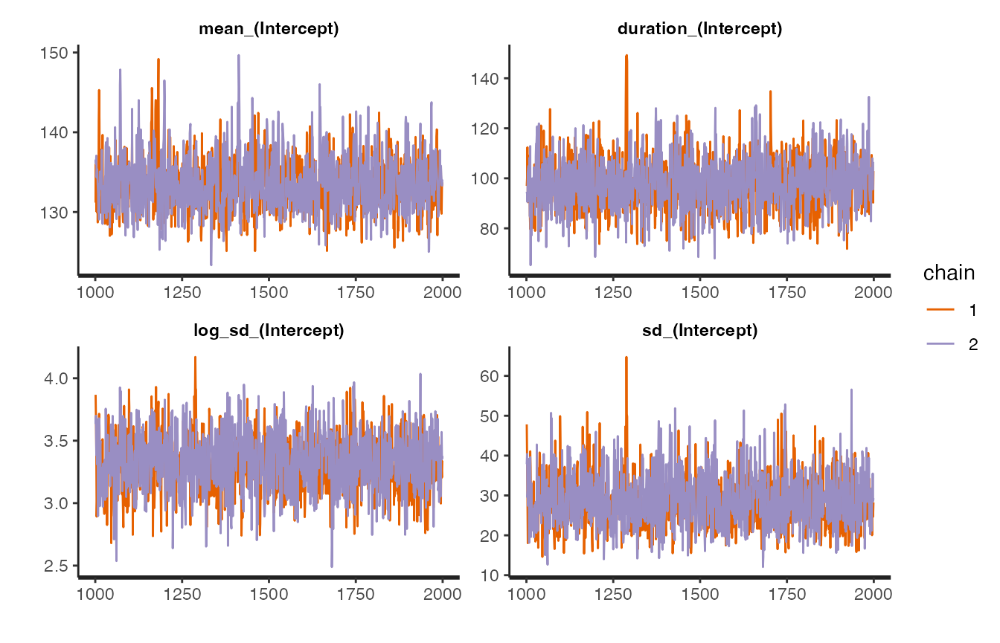
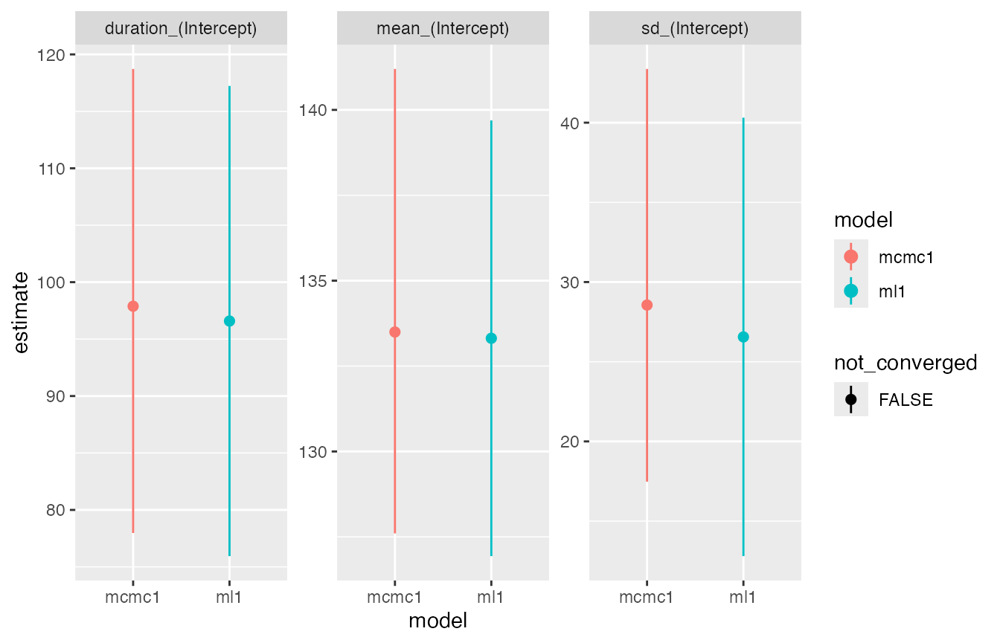
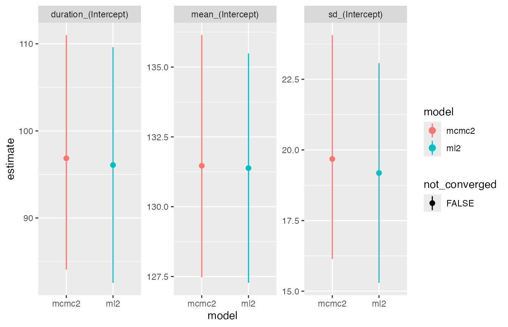
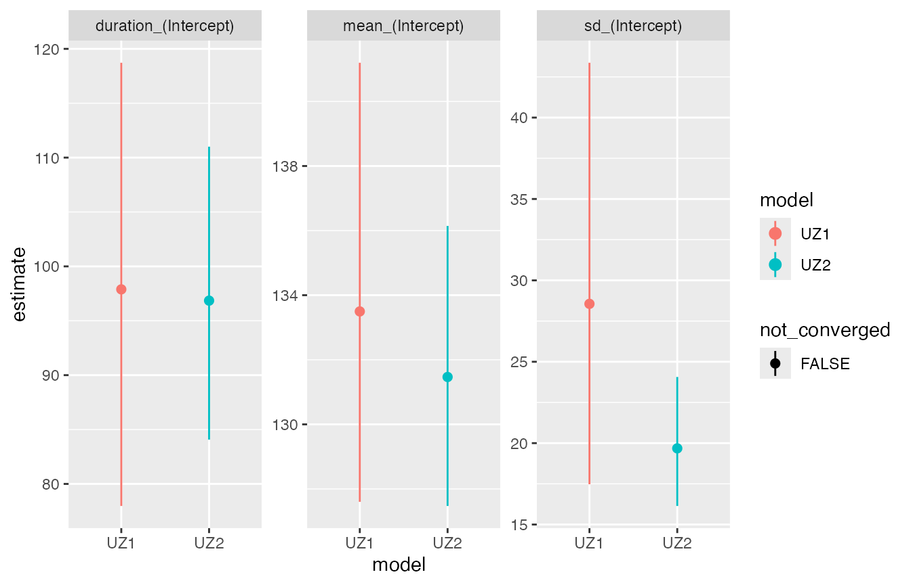

getting-started.RmdFor demonstration purposes we use the sanderlings dataset from Underhill and Zucchini (1988). It contains observations of sampling dates Day and moult indices MIndex for 164 adult Sanderlings (Calidris alba) trapped on 11 days in the South Africa in the austral summer of 1978/79. The sample contains 85 pre-moult individuals, 66 in active moult and 13 post-moult individuals. The data are augmented with a column describing categorical moult status MCat, so we can demonstrate fitting Type 1 models.
data("sanderlings")
sanderlings$MCat <- case_when(sanderlings$MIndex == 0 ~ 1,
sanderlings$MIndex == 1 ~3,
TRUE ~ 2)
#plot the data
ggplot(sanderlings, aes(y=MIndex, x=Day, col = factor(MCat))) + geom_point() +theme_classic()At present, each Underhill-Zucchini model type is implemented as a standalone function in moultmcmc. Function names are composed of the prefix uz followed by the numeral for the relevant data type and the postfix _linpred. To fit the type 1 model we therefore use the uz1_linpred() function. As there are no covariates in the data each linear predictor is specified as an intercept only model using the formula notation ~1:
uz1 = uz1_linpred(moult_cat_column = "MCat",
date_column = "Day",
data = sanderlings,
start_formula = ~1,
duration_formula = ~1,
sigma_formula = ~1,
init = "auto",
log_lik = FALSE)
#>
#> SAMPLING FOR MODEL 'uz1_linpred' NOW (CHAIN 1).
#> Chain 1:
#> Chain 1: Gradient evaluation took 0.000144 seconds
#> Chain 1: 1000 transitions using 10 leapfrog steps per transition would take 1.44 seconds.
#> Chain 1: Adjust your expectations accordingly!
#> Chain 1:
#> Chain 1:
#> Chain 1: Iteration: 1 / 2000 [ 0%] (Warmup)
#> Chain 1: Iteration: 200 / 2000 [ 10%] (Warmup)
#> Chain 1: Iteration: 400 / 2000 [ 20%] (Warmup)
#> Chain 1: Iteration: 600 / 2000 [ 30%] (Warmup)
#> Chain 1: Iteration: 800 / 2000 [ 40%] (Warmup)
#> Chain 1: Iteration: 1000 / 2000 [ 50%] (Warmup)
#> Chain 1: Iteration: 1001 / 2000 [ 50%] (Sampling)
#> Chain 1: Iteration: 1200 / 2000 [ 60%] (Sampling)
#> Chain 1: Iteration: 1400 / 2000 [ 70%] (Sampling)
#> Chain 1: Iteration: 1600 / 2000 [ 80%] (Sampling)
#> Chain 1: Iteration: 1800 / 2000 [ 90%] (Sampling)
#> Chain 1: Iteration: 2000 / 2000 [100%] (Sampling)
#> Chain 1:
#> Chain 1: Elapsed Time: 0.706552 seconds (Warm-up)
#> Chain 1: 0.332263 seconds (Sampling)
#> Chain 1: 1.03882 seconds (Total)
#> Chain 1:
#>
#> SAMPLING FOR MODEL 'uz1_linpred' NOW (CHAIN 2).
#> Chain 2:
#> Chain 2: Gradient evaluation took 5.1e-05 seconds
#> Chain 2: 1000 transitions using 10 leapfrog steps per transition would take 0.51 seconds.
#> Chain 2: Adjust your expectations accordingly!
#> Chain 2:
#> Chain 2:
#> Chain 2: Iteration: 1 / 2000 [ 0%] (Warmup)
#> Chain 2: Iteration: 200 / 2000 [ 10%] (Warmup)
#> Chain 2: Iteration: 400 / 2000 [ 20%] (Warmup)
#> Chain 2: Iteration: 600 / 2000 [ 30%] (Warmup)
#> Chain 2: Iteration: 800 / 2000 [ 40%] (Warmup)
#> Chain 2: Iteration: 1000 / 2000 [ 50%] (Warmup)
#> Chain 2: Iteration: 1001 / 2000 [ 50%] (Sampling)
#> Chain 2: Iteration: 1200 / 2000 [ 60%] (Sampling)
#> Chain 2: Iteration: 1400 / 2000 [ 70%] (Sampling)
#> Chain 2: Iteration: 1600 / 2000 [ 80%] (Sampling)
#> Chain 2: Iteration: 1800 / 2000 [ 90%] (Sampling)
#> Chain 2: Iteration: 2000 / 2000 [100%] (Sampling)
#> Chain 2:
#> Chain 2: Elapsed Time: 0.715314 seconds (Warm-up)
#> Chain 2: 0.345629 seconds (Sampling)
#> Chain 2: 1.06094 seconds (Total)
#> Chain 2:
#>
#> SAMPLING FOR MODEL 'uz1_linpred' NOW (CHAIN 3).
#> Chain 3:
#> Chain 3: Gradient evaluation took 5.1e-05 seconds
#> Chain 3: 1000 transitions using 10 leapfrog steps per transition would take 0.51 seconds.
#> Chain 3: Adjust your expectations accordingly!
#> Chain 3:
#> Chain 3:
#> Chain 3: Iteration: 1 / 2000 [ 0%] (Warmup)
#> Chain 3: Iteration: 200 / 2000 [ 10%] (Warmup)
#> Chain 3: Iteration: 400 / 2000 [ 20%] (Warmup)
#> Chain 3: Iteration: 600 / 2000 [ 30%] (Warmup)
#> Chain 3: Iteration: 800 / 2000 [ 40%] (Warmup)
#> Chain 3: Iteration: 1000 / 2000 [ 50%] (Warmup)
#> Chain 3: Iteration: 1001 / 2000 [ 50%] (Sampling)
#> Chain 3: Iteration: 1200 / 2000 [ 60%] (Sampling)
#> Chain 3: Iteration: 1400 / 2000 [ 70%] (Sampling)
#> Chain 3: Iteration: 1600 / 2000 [ 80%] (Sampling)
#> Chain 3: Iteration: 1800 / 2000 [ 90%] (Sampling)
#> Chain 3: Iteration: 2000 / 2000 [100%] (Sampling)
#> Chain 3:
#> Chain 3: Elapsed Time: 0.635836 seconds (Warm-up)
#> Chain 3: 0.320891 seconds (Sampling)
#> Chain 3: 0.956727 seconds (Total)
#> Chain 3:
#>
#> SAMPLING FOR MODEL 'uz1_linpred' NOW (CHAIN 4).
#> Chain 4:
#> Chain 4: Gradient evaluation took 5.1e-05 seconds
#> Chain 4: 1000 transitions using 10 leapfrog steps per transition would take 0.51 seconds.
#> Chain 4: Adjust your expectations accordingly!
#> Chain 4:
#> Chain 4:
#> Chain 4: Iteration: 1 / 2000 [ 0%] (Warmup)
#> Chain 4: Iteration: 200 / 2000 [ 10%] (Warmup)
#> Chain 4: Iteration: 400 / 2000 [ 20%] (Warmup)
#> Chain 4: Iteration: 600 / 2000 [ 30%] (Warmup)
#> Chain 4: Iteration: 800 / 2000 [ 40%] (Warmup)
#> Chain 4: Iteration: 1000 / 2000 [ 50%] (Warmup)
#> Chain 4: Iteration: 1001 / 2000 [ 50%] (Sampling)
#> Chain 4: Iteration: 1200 / 2000 [ 60%] (Sampling)
#> Chain 4: Iteration: 1400 / 2000 [ 70%] (Sampling)
#> Chain 4: Iteration: 1600 / 2000 [ 80%] (Sampling)
#> Chain 4: Iteration: 1800 / 2000 [ 90%] (Sampling)
#> Chain 4: Iteration: 2000 / 2000 [100%] (Sampling)
#> Chain 4:
#> Chain 4: Elapsed Time: 0.538294 seconds (Warm-up)
#> Chain 4: 0.334197 seconds (Sampling)
#> Chain 4: 0.872491 seconds (Total)
#> Chain 4:A summary table of parameter estimates can be displayed with
summary_table(uz1)
#> # A tibble: 5 × 10
#> parameter estim…¹ se_mean sd lci uci n_eff Rhat prob method
#> <chr> <dbl> <dbl> <dbl> <dbl> <dbl> <dbl> <dbl> <dbl> <chr>
#> 1 mean_(Interce… 134. 0.0766 3.49 127. 141. 2076. 1.00 0.95 MCMC
#> 2 duration_(Int… 97.8 0.220 11.0 77.6 120. 2490. 1.00 0.95 MCMC
#> 3 log_sd_(Inter… 3.34 0.00532 0.233 2.86 3.77 1916. 1.00 0.95 MCMC
#> 4 sd_(Intercept) 28.9 0.151 6.69 17.5 43.5 1960. 1.00 0.95 MCMC
#> 5 lp__ -104. 0.0307 1.26 -107. -103. 1685. 1.00 0.95 MCMC
#> # … with abbreviated variable name ¹estimateand standard model assessment can be done as for any posterior sample from Stan, by directly accessing the stanfit slot of the returned S3 object. For example we can look at the traceplots for the model using rstan::stan_trace
stan_trace(uz1$stanfit)
For comparison we can fit the same model using maximum likelihood estimation via the moult package (Erni et al. 2013)
m1 = moult(MIndex ~ Day,data = sanderlings, type = 1)
summary_table(m1)
#> # A tibble: 3 × 8
#> parameter estimate stderr lci uci prob method Rhat
#> <chr> <dbl> <dbl> <dbl> <dbl> <dbl> <chr> <lgl>
#> 1 duration_(Intercept) 96.6 10.5 75.9 117. 0.95 ML NA
#> 2 mean_(Intercept) 133. 3.25 127. 140. 0.95 ML NA
#> 3 sd_(Intercept) 26.6 7.02 12.8 40.3 0.95 ML NA
compare_plot(m1, uz1, names = c('ML','MCMC'))
The comparison plot shows very similar estimates for both methods.
Similarly we can fit the corresponding Type 2 model, that makes use of the full information contained in the moult indices, using the uz2_linpred() function. All moultmcmc model functions default to an intercept only model, so we do not need to explicitly specify the individual linear predictors here.
#fit using MCMC
uz2 = uz2_linpred("MIndex",
date_column = "Day",
data = sanderlings,
log_lik = FALSE)
#>
#> SAMPLING FOR MODEL 'uz2_linpred' NOW (CHAIN 1).
#> Chain 1:
#> Chain 1: Gradient evaluation took 6.2e-05 seconds
#> Chain 1: 1000 transitions using 10 leapfrog steps per transition would take 0.62 seconds.
#> Chain 1: Adjust your expectations accordingly!
#> Chain 1:
#> Chain 1:
#> Chain 1: Iteration: 1 / 2000 [ 0%] (Warmup)
#> Chain 1: Iteration: 200 / 2000 [ 10%] (Warmup)
#> Chain 1: Iteration: 400 / 2000 [ 20%] (Warmup)
#> Chain 1: Iteration: 600 / 2000 [ 30%] (Warmup)
#> Chain 1: Iteration: 800 / 2000 [ 40%] (Warmup)
#> Chain 1: Iteration: 1000 / 2000 [ 50%] (Warmup)
#> Chain 1: Iteration: 1001 / 2000 [ 50%] (Sampling)
#> Chain 1: Iteration: 1200 / 2000 [ 60%] (Sampling)
#> Chain 1: Iteration: 1400 / 2000 [ 70%] (Sampling)
#> Chain 1: Iteration: 1600 / 2000 [ 80%] (Sampling)
#> Chain 1: Iteration: 1800 / 2000 [ 90%] (Sampling)
#> Chain 1: Iteration: 2000 / 2000 [100%] (Sampling)
#> Chain 1:
#> Chain 1: Elapsed Time: 0.697287 seconds (Warm-up)
#> Chain 1: 0.366085 seconds (Sampling)
#> Chain 1: 1.06337 seconds (Total)
#> Chain 1:
#>
#> SAMPLING FOR MODEL 'uz2_linpred' NOW (CHAIN 2).
#> Chain 2:
#> Chain 2: Gradient evaluation took 4.5e-05 seconds
#> Chain 2: 1000 transitions using 10 leapfrog steps per transition would take 0.45 seconds.
#> Chain 2: Adjust your expectations accordingly!
#> Chain 2:
#> Chain 2:
#> Chain 2: Iteration: 1 / 2000 [ 0%] (Warmup)
#> Chain 2: Iteration: 200 / 2000 [ 10%] (Warmup)
#> Chain 2: Iteration: 400 / 2000 [ 20%] (Warmup)
#> Chain 2: Iteration: 600 / 2000 [ 30%] (Warmup)
#> Chain 2: Iteration: 800 / 2000 [ 40%] (Warmup)
#> Chain 2: Iteration: 1000 / 2000 [ 50%] (Warmup)
#> Chain 2: Iteration: 1001 / 2000 [ 50%] (Sampling)
#> Chain 2: Iteration: 1200 / 2000 [ 60%] (Sampling)
#> Chain 2: Iteration: 1400 / 2000 [ 70%] (Sampling)
#> Chain 2: Iteration: 1600 / 2000 [ 80%] (Sampling)
#> Chain 2: Iteration: 1800 / 2000 [ 90%] (Sampling)
#> Chain 2: Iteration: 2000 / 2000 [100%] (Sampling)
#> Chain 2:
#> Chain 2: Elapsed Time: 0.632948 seconds (Warm-up)
#> Chain 2: 0.292374 seconds (Sampling)
#> Chain 2: 0.925322 seconds (Total)
#> Chain 2:
#>
#> SAMPLING FOR MODEL 'uz2_linpred' NOW (CHAIN 3).
#> Chain 3:
#> Chain 3: Gradient evaluation took 4.4e-05 seconds
#> Chain 3: 1000 transitions using 10 leapfrog steps per transition would take 0.44 seconds.
#> Chain 3: Adjust your expectations accordingly!
#> Chain 3:
#> Chain 3:
#> Chain 3: Iteration: 1 / 2000 [ 0%] (Warmup)
#> Chain 3: Iteration: 200 / 2000 [ 10%] (Warmup)
#> Chain 3: Iteration: 400 / 2000 [ 20%] (Warmup)
#> Chain 3: Iteration: 600 / 2000 [ 30%] (Warmup)
#> Chain 3: Iteration: 800 / 2000 [ 40%] (Warmup)
#> Chain 3: Iteration: 1000 / 2000 [ 50%] (Warmup)
#> Chain 3: Iteration: 1001 / 2000 [ 50%] (Sampling)
#> Chain 3: Iteration: 1200 / 2000 [ 60%] (Sampling)
#> Chain 3: Iteration: 1400 / 2000 [ 70%] (Sampling)
#> Chain 3: Iteration: 1600 / 2000 [ 80%] (Sampling)
#> Chain 3: Iteration: 1800 / 2000 [ 90%] (Sampling)
#> Chain 3: Iteration: 2000 / 2000 [100%] (Sampling)
#> Chain 3:
#> Chain 3: Elapsed Time: 0.618732 seconds (Warm-up)
#> Chain 3: 0.345191 seconds (Sampling)
#> Chain 3: 0.963923 seconds (Total)
#> Chain 3:
#>
#> SAMPLING FOR MODEL 'uz2_linpred' NOW (CHAIN 4).
#> Chain 4:
#> Chain 4: Gradient evaluation took 4.5e-05 seconds
#> Chain 4: 1000 transitions using 10 leapfrog steps per transition would take 0.45 seconds.
#> Chain 4: Adjust your expectations accordingly!
#> Chain 4:
#> Chain 4:
#> Chain 4: Iteration: 1 / 2000 [ 0%] (Warmup)
#> Chain 4: Iteration: 200 / 2000 [ 10%] (Warmup)
#> Chain 4: Iteration: 400 / 2000 [ 20%] (Warmup)
#> Chain 4: Iteration: 600 / 2000 [ 30%] (Warmup)
#> Chain 4: Iteration: 800 / 2000 [ 40%] (Warmup)
#> Chain 4: Iteration: 1000 / 2000 [ 50%] (Warmup)
#> Chain 4: Iteration: 1001 / 2000 [ 50%] (Sampling)
#> Chain 4: Iteration: 1200 / 2000 [ 60%] (Sampling)
#> Chain 4: Iteration: 1400 / 2000 [ 70%] (Sampling)
#> Chain 4: Iteration: 1600 / 2000 [ 80%] (Sampling)
#> Chain 4: Iteration: 1800 / 2000 [ 90%] (Sampling)
#> Chain 4: Iteration: 2000 / 2000 [100%] (Sampling)
#> Chain 4:
#> Chain 4: Elapsed Time: 0.67382 seconds (Warm-up)
#> Chain 4: 0.286557 seconds (Sampling)
#> Chain 4: 0.960377 seconds (Total)
#> Chain 4:
#fit using ML
m2 = moult(MIndex ~ Day,data = sanderlings, type = 2)
#compare parameter estimates
compare_plot(m2, uz2, names = c('ML','MCMC'))
As before the comparison plot shows very similar estimates for both methods. Perhaps more interesting is a comparison of the two model types, which illustrates the gain in precision achieved by exploiting the information contained in the moult indices.
compare_plot(uz1, uz2, names = c('UZ1','UZ2'))
Erni, Birgit, Bo T. Bonnevie, Hans-Dieter Oschadleus, Res Altwegg, and Les G. Underhill. 2013. “Moult: An R Package to Analyze Moult in Birds.” Journal of Statistical Software 52. https://doi.org/10.18637/jss.v052.i08.
Underhill, Les G., and Walter Zucchini. 1988. “A Model for Avian Primary Moult.” Ibis 130: 358–72. https://doi.org/10.1111/j.1474-919x.1988.tb00993.x.